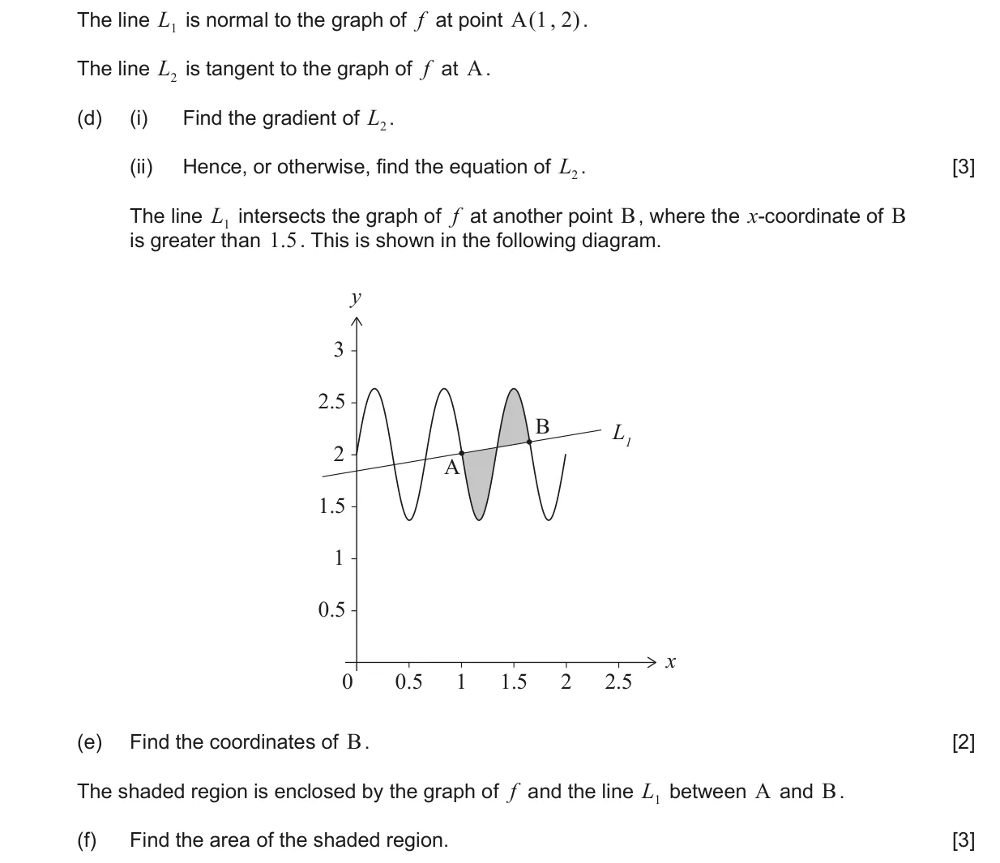
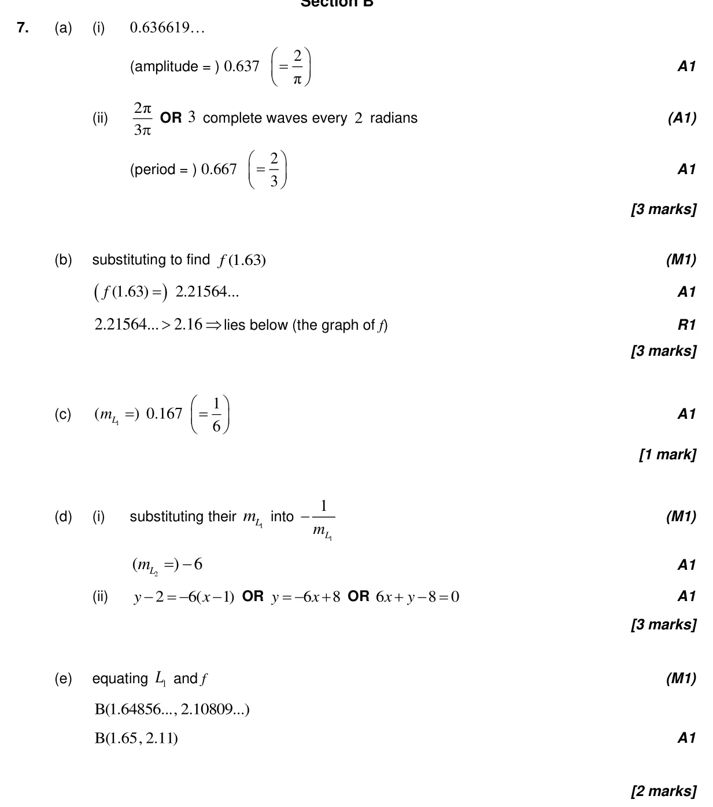
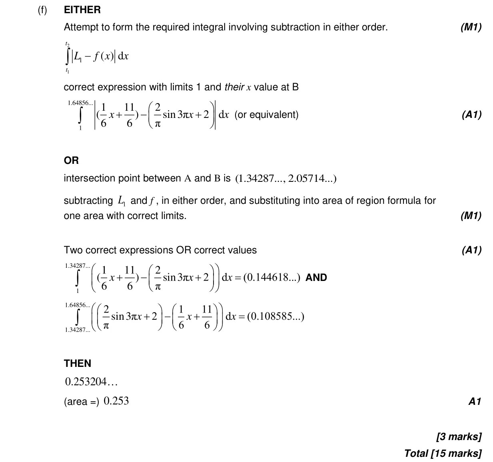

15 marks P2 TZ3 Section B Calculator 3.7 Circular functions: graphs, composites and transformations2.2 Functions, notation, domain, range and inverse as reflection5.11 Definite integrals, areas under curve onto x-axis and areas between curves2.1 Equations of straight lines, parallel and perpendicular2.4 Key features of graphs5.4 Tangents and normals Question Hide breakdown abcdef Markscheme 